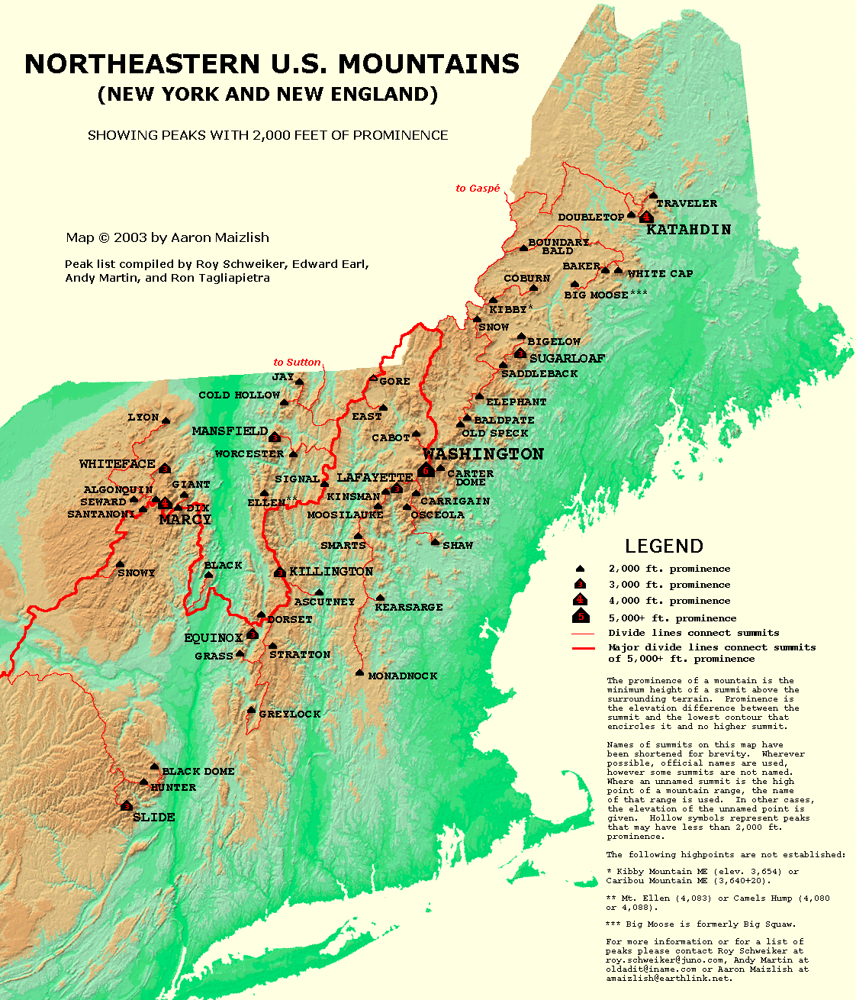

The White Mountains are one of the best hiking locations in New England. It is home to several mountains that are on the appalation hiking trail that runs through New Hampshire. The tallest mountain in New Hampshire is Mount Washington. Mount Washington is 6,289 feet tall and Can be very dangerous to climb depending on the time of year.
